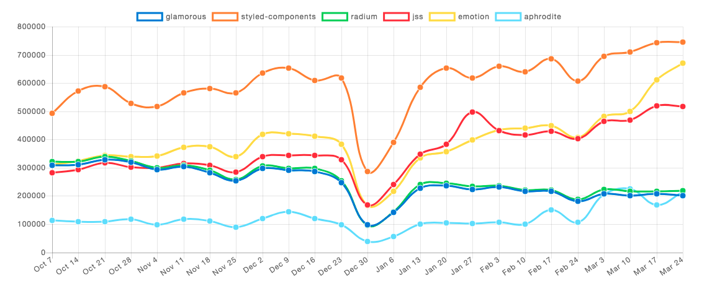

Stylowanie bardziej
Piotr MartyniakDaftCode
CSS reset i normalize
Rozszerzenia CSS

sass + webpack
> npm i -s sass-loader node-sass css-loader style-loader
> npm i -s mini-css-extract-plugin postcss-loader postcss-preset-env
webpack.config.js
const MiniCssExtractPlugin = require("mini-css-extract-plugin");
const isProduction = process.env.NODE_ENV === 'production';
module.exports = {
//...
module: {
rules: [{
test: /\.s(a|c)ss$/,
use: [
isProduction
? MiniCssExtractPlugin.loader
: { loader: 'style-loader', options: { sourceMap: true } },
{ loader: 'css-loader', options: { sourceMap: isProduction } },
{ loader: 'postcss-loader', options: { sourceMap: isProduction } },
{ loader: 'sass-loader', options: { sourceMap: isProduction } }
]
}]
},
plugins: [
new MiniCssExtractPlugin({
// Options similar to the same options in webpackOptions.output; optional
filename: "[name].css",
chunkFilename: "[id].css"
})
]
};
postcss.config.js
module.exports = {
plugins: {
'postcss-preset-env': {},
}
}
index.js
import 'main.sass'
document.body.innerHTML = '<h1>Hello!</h1> <p>I am styled.</p>'
@extend
%placeholderami
Metodologie
- OOCSS
- SMACSS
- Atomic
- BEM
oocss
object oriented css
- Rozdział struktury od skórki
- Rozdział kontenerów od treści
Object == 'recurring visual pattern'
SMACSS
Scalable and Modular Architecture for CSS
- Base - podstawy
- Layout - ...layout? 🤔
- Module - komponenty
- State - stany
- Theme - skórka
Atomic CSS
każdy styl -> nowa klasa
BEM
Block
Niezależny, atomowy obiekt, który ma sens sam w sobie. Komponent.
nagłówek, avatar, menu, checkbox, modal
Element
Element bloku. Kawałek HTMLa który występuje tylko w bloku, jest jego integralną częścią
pozycja menu/listy, etykietka checkbox'a, tytuł w nagłówku, 'x' w modalu
Modifier
Flaga informująca o stanie, wersji, kontekście bloku (lub elementu)
disabled, highlighted, checked, open, size big, color yellow
.block__element--modifier
.block__element
.block--modifier
Bloki to Komponenty
<div class='user-card'> <!-- user-card -->
<div class='user-card__header'>
<div class='card-header'> <!-- card-header -->
<div class='card-header__title'>My profile</div>
<div class='card-header__actions'>
<div class='card-header__button button button--hide'> - </div> <!-- button -->
<div class='card-header__button button button--expand'> + </div>
</div>
</div>
</div>
<div class='user-card__content'>
things!
</div>
</div>
sass/
|
|– abstracts/
|– base/
|– components/
|
|- button.scss
|- card-header.scss
`- user-card.scss
Powszechne błędy
"Zagnieżdżanie nazw" elementów
.list__item__title // NOPE!.list__item //👍
.list__titleKaskadowość
.user-card {
&__header {
padding: 0 5px;
.delete-button {
color: $color-navy;
}
}
} raczej:
.delete-button {
&—-inline {
color: $color-navy
}
}.user-card {
&__button {
color: $color-navy;
}
}więcej błędów... 🤭
npm i -s bem-modifiersCSS-IN-JS
"Inline css" buduje się do:
inline style!
To nie jest CSS-IN-JS!
Hello CSS-in-JS
const styles = {
wrapper: {
background: 'black'
},
title: {
color: 'white'
}
};
applyStyles(myComponent, styles); // zmyślony przykład
👍 Zalety 👍
- Komponentowy
- Pełne wykorzystanie JS
- 100% wyizolowane style
- Code sharing
- Dołączane tylko obecnie potrzebne style
- Brak nieużywanych reguł
- Unit testy dla CSS! (jak już ktoś bardzo chce...)
- Łatwy setup (z webpackiem)
👎 Wady 👎
- Jeszcze jedna abstrakcja do wyuczenia.
- Słabe wykorzystanie cache przeglądarki (przy SSR).
- Kolejne zależności.
- Brak korzyści z BEMowskiego myślenia o komponentach.
- Tylko dla SPA / SSR 🤔
- Pożenione z Frameworkami JS 🤔
Co mamy do wyboru?
...a konfiguracja?
...
...
npm i --s @emotion/coreZrobione! 🍻
Muchas gracias!